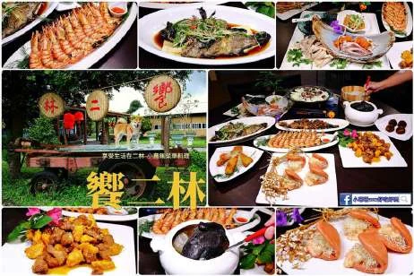

地方基礎
產業與文化
葡萄酒莊、蕎麥、紅龍果、稻米與蔗農歷史，具有明確的在地故事。
 餓，林時起意！ERLIN SLOW TRAVEL
餓，林時起意！ERLIN SLOW TRAVEL把分散的農業資源，變成可預約、可成團、可再次造訪的地方旅遊商品。
葡萄酒莊、蕎麥、紅龍果、稻米與蔗農歷史，具有明確的在地故事。

鎖定里民活動、退休族、大型家族與戶外教學，增加平日接待機會。

透過酒莊、農場、餐飲、民宿及農會選物，讓團費外也能產生在地消費。
平日出團、緩步調、共食與農會伴手禮選購。
三代同遊、親子DIY、包棟住宿與共同回憶。
葡萄與蕎麥食農、農事實作、二林蔗農文化學習。
鹿港的歷史街區、田尾的花卉園藝各有魅力；二林以「葡萄酒鄉＋農業風土＋團體食農」建立自身定位。